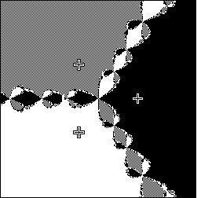

| We have already mentioned that when starting from a point on the bounday of the basins of the roots, Newton's method does not converge, but oscillates chaotically. |
|  |
| In one way this is not such an interesting failure, because the basin boundary is very sparse in the sense that small changes in the starting point typically give a point in one of the basins of attraction. |
| So this type of failure is unlikely to happen. |
Return to Universality of the Mandelbrot set.